Conquistas
46 medalhas em 4 categorias. A tecla K abre o painel.
Luthor Corp
Primeiro lançamentoLance um produto no laboratório.
Linha de produçãoLance 25 produtos.
Gigante da tecnologiaLance 100 produtos.
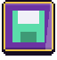
Laboratório completoLibere as 12 bancadas do laboratório.
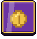
Cofre cheioTenha $ 10.000 de uma vez.
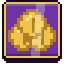
Fortuna LuthorFature $ 100.000 no total.
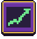
Wall StreetFaça a ação LCORP chegar a $ 200.
A Luthor Corp é minhaTermine a história da Luthor Corp (os tios e o conselho).
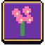
Coração de National CityTermine todas as obras da Fundação Luthor.
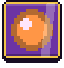
Laboratório de pontaCompre as 4 melhorias do laboratório.
Amizades e amor
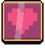
Primeira amizadeChegue a 4 corações com alguém.
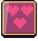
PopularTenha 5 corações com 10 pessoas.
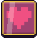
Melhores amigasChegue a 10 corações com alguém.
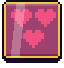
Todo mundo te amaTenha 6 corações com todas as pessoas da cidade.
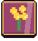
Mão abertaDê 50 presentes.
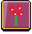
Namorando!Comece a namorar alguém.
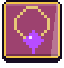
Lar doce larVá morar junto com a namorada.
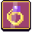
Felizes para sempreCase-se no Jardim do Mirante.
De olho em tudoVeja 6 momentos entre os moradores.
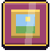
Álbum de memóriasTenha 15 fotos no álbum do Barry.
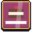
Parabéns pra vocêVá à sua festa surpresa de aniversário no terraço.
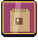
Amiga de longeReceba 4 visitas da Andrea Rojas.
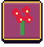
Roteiro românticoFaça os 4 encontros especiais (piquenique, veleiro, cinema e jantar).
Lazer
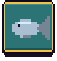
Primeiro peixePesque um peixe.
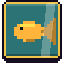
Aquário completoPonha todas as espécies de peixe no aquário.
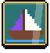
Lobo do marVença a regata da Marina Luthor.
Chef de cozinhaCozinhe todas as receitas.
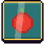
Dedo verdeColha 50 vezes na horta do terraço.
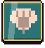
ExploradoraEncontre todos os coletáveis.
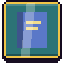
Rato de bibliotecaLeia todos os livros.
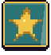
Estrela do karaokêTire nota S no karaokê do Noonan's.
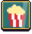
CinéfilaAssista a 10 filmes no cinema.
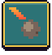
Piloto de eliteFaça 80 pontos no Meteoro, o fliperama.
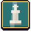
Xeque-mateVença o Brainy no xadrez.
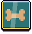
Família de quatro patasAdote um bichinho.
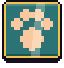
Amiga dos gatosFaça carinho no gatinho de rua 10 vezes.
Paladar de sommelierAcerte os três vinhos numa degustação com a Vittoria.
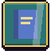
Rata de bibliotecaVá a 5 reuniões do clube do livro do Theo.
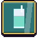
Fôlego de maratonistaCorra 10 vezes com a Sam na orla.
National City
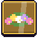
FesteiraVá às quatro festas das estações.
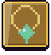
Check-up completoFaça consulta nas 12 especialidades do Conti Moretti.
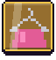
FashionistaTenha todos os looks do closet.
Um ano em National CityJogue um ano inteiro (as quatro estações).
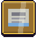
Capa da CatCoApareça em 10 manchetes da CatCo.
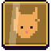
Amiga da pediatriaSeja voluntária na brinquedoteca do Conti Moretti 5 vezes.
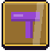
Investidora da modaLance a primeira coleção da Celeste.